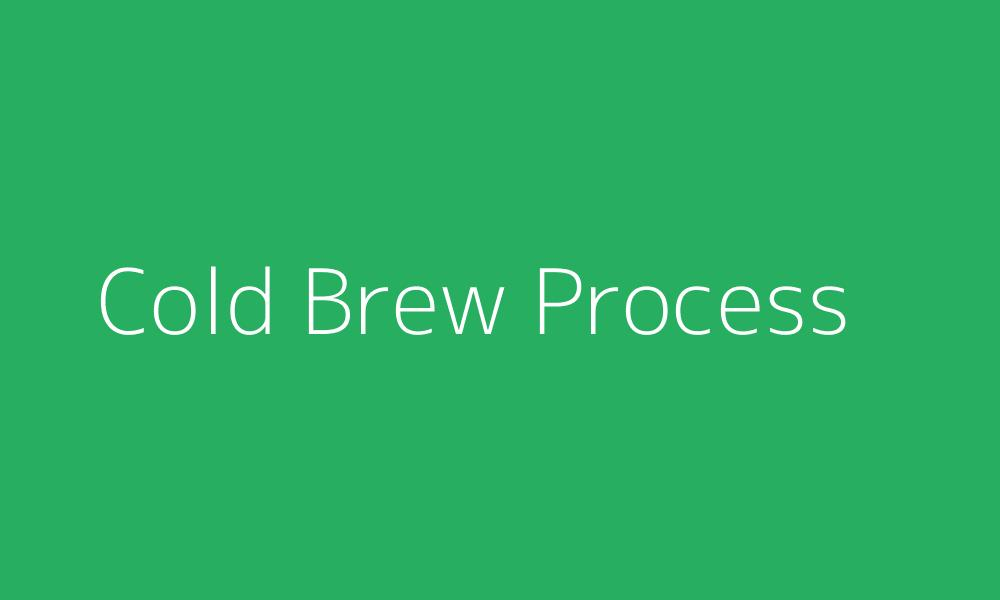
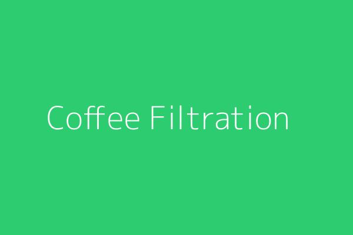

当社のコールドブリュー抽出方法
優れた風味抽出のための最先端プロセス
Massaでは、商業用途に向けた運用効率を維持しながら、最適な風味抽出を保証する独自の冷抽出プロセスを開発しました。当社の方法は、酸味を抑えながらコーヒー豆の完全な風味プロファイルを抽出し、滑らかさを向上させるように設計されています。
正確に制御された水温、接触時間、濾過を使用して、小規模なクラフト事業から大規模な商業施設まで、さまざまな生産規模で一貫して優れた結果を提供します。

コールドブリューコーヒー製造プロセス
当社のプロフェッショナルなステップバイステップの冷抽出プロセスをご覧ください
1
豆の選択と準備
希望する風味プロファイルを持つ高品質のコーヒー豆を選びます。粗挽きは、適切な抽出を促進しながら過剰抽出や沈殿物の問題を防ぐため、コールドブリューに不可欠です。
- 挽き目の大きさ：極粗挽き（海塩の粒度）
- 豆と水の比率：重量比で1:4〜1:8
- 推奨豆の種類：ミディアムからダークロースト

2
浸漬プロセス
コーヒー粉は専用の醸造容器で水に完全に浸されます。粉と水の混合物はむらなく浸透するように優しく攪拌され、その後浸漬されます。
- 浸漬時間：12〜24時間
- 容器素材：食品グレードのステンレス鋼
- 環境：温度制御された環境
3
多段階濾過
浸漬後、コーヒー濃縮液は独自の多段階濾過プロセスを経て、完全な風味スペクトルと芳香成分を保ちながら、すべての微粒子を取り除きます。
- 一次濾過：ステンレスメッシュ（250〜500ミクロン）
- 二次濾過：布フィルター（75〜100ミクロン）
- 最終濾過：ペーパーフィルター（10〜15ミクロン）

当社のコールドブリュープロセスの利点
プロフェッショナルな冷抽出が違いを生む理由
67%低い酸性度
当社の冷抽出プロセスは、ホット抽出方法と比較して酸性度が大幅に低いコーヒーを生産し、より滑らかな味わいと消化性の向上をもたらします。
長い保存期間
制御された抽出環境と多段階濾過により、適切な冷蔵下で最大14日間ピークの風味を維持する濃縮液が生成されます。
風味抽出の向上
ゆっくりとした冷抽出プロセスは、苦味成分を残しながら複雑な風味成分を引き出し、自然な甘さと豊かなプロファイルを生み出します。
コールドブリュー生産を向上させる準備はできていますか？
当社のプロフェッショナルなコールドブリュー設備とプロセスが、お客様のビジネスが大規模に優れたコーヒーを生産するのにどのように役立つかをご覧ください。